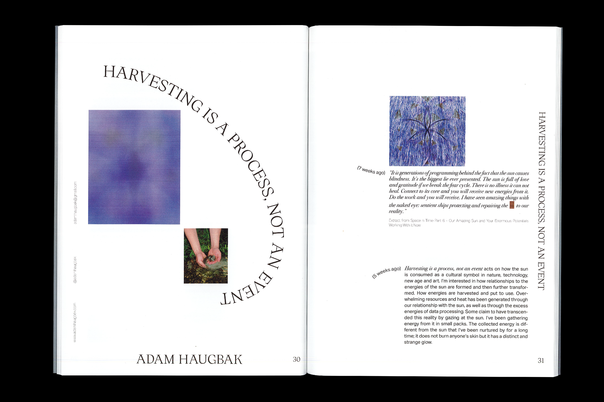

Scope is a publicaion made with students from the BA programme in Fine Art at HDK-Valand 2020. As a reader you´re given an insight into the various ideas, artistic works and processes developed among them.
The design is an collaboration with fellow designer Sara Nygård. Embracing the possibilities of being a newly graduated artist - our design plays with blurred images, typography that seems to be leaving the paragraphs and a cover embracing the idea of the scope.
Edition of 300, digital print, 193mm x 263mm, insert 64 pages, cover 8 pages


